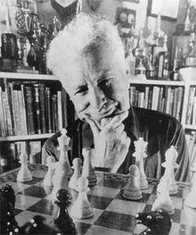

This page is dedicated to Arpad Elo, the inventor of the Elo rating system. The Elo rating system was developed for chess, but due to its effectiveness and simplicity, it has been adopted widely across sports, games, education and the evaluation of AI models.
A common mistake is to write the name as an acronym "ELO" or as a common noun "elo". This page exists as a testament to the man behind the name, and to remind everyone that Elo was a person.